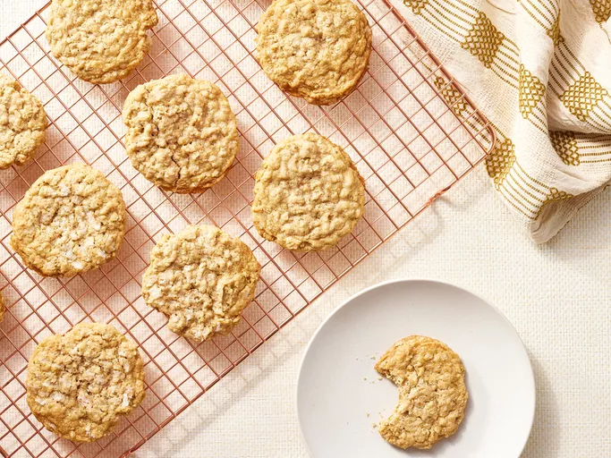

Soft Oatmeal Cookies
Recipe by:
BITTERSWEET1

"Soft Oatmeal Cookies" Photo by
Dotdash Meredith Food Studios
Description
These oatmeal cookies are perfectly flavored and lightly spiced with
just a touch of cinnamon. They're soft, chewy, and easily customizable
— just add 1 cup raisins, nuts, or chocolate chips when you mix in the oats.
Keep them on hand for after-school snacking or make a batch for a holiday
cookie exchange.
If this oatmeal cookie recipe is not already a staple in your dessert rotation,
it will be soon. These oatmeal cookies are soft, chewy, and utterly irresistible.
Ingredients
- 2 cups all-purpose flour
- 1 ½ teaspoons ground cinnamon
- 1 teaspoon baking soda
- 1 teaspoon salt
- 1 cup unsalted butter, softened
- 1 cup white sugar
- 1 cup packed brown sugar
- 2 large eggs
- 1 teaspoon vanilla extract
- 3 cups quick cooking oats
- Non-stick cooking spray with flour
- 2 tablespoons water
- 2 tablespoons white sugar, or as needed
Steps
-
Make the dough: Whisk the dry ingredients in a medium
bowl. In a separate bowl, beat the butter and sugar. Beat in the eggs
and vanilla. Add the dry mixture to the wet mixture, then stir in the
oats. Cover and chill for at least one hour (this step is important to
prevent spreading!).
-
Roll the cookies: Roll the chilled dough into balls and
place the balls on baking sheets. Dip a fork in water, then in sugar. Use
the fork to flatten each dough ball.
-
Bake the cookies: Bake in the preheated oven until the
edges are golden brown and the centers are nearly set. Cool on the baking
sheet for 5 minutes, then transfer to a wire rack.